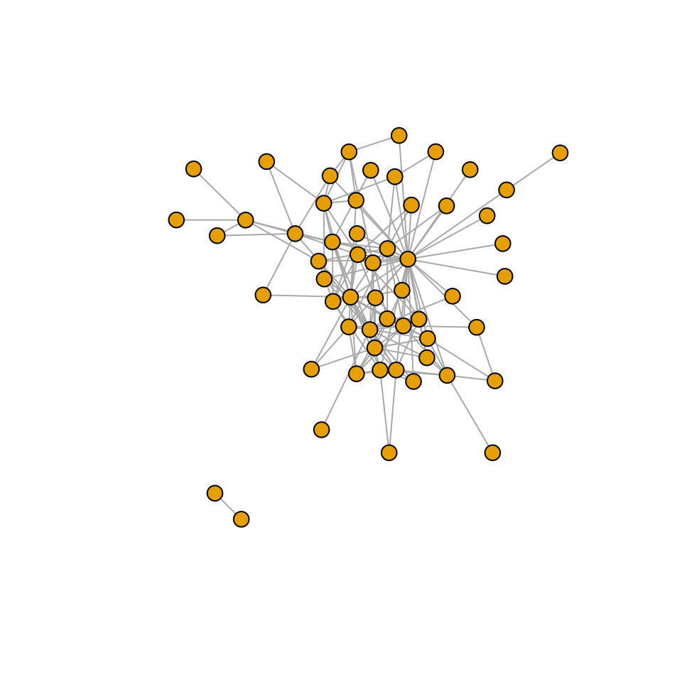
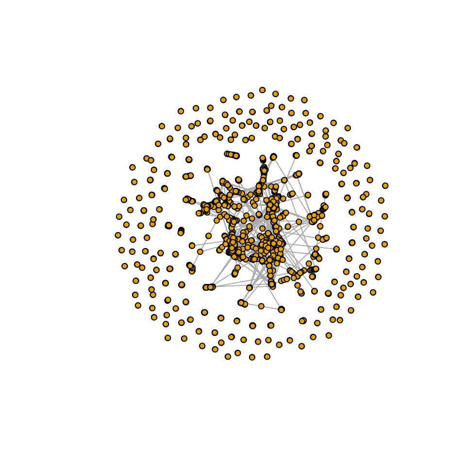

Netdis: Protein interaction networks
2022-06-06
dendrogram_example_net_dis.RmdProtein interaction networks
In this vignette we show a potential application of Netdis for real world data. In this case the comparison between the protein network structures could provide some insight into the phylogenetic tree of organisms as suggested in Ali et al. (2014). In this application we show a proxy of the phylogenetic tree of 5 organisms, 4 Herpes virus and Escherichia Coli. The tree is approximated via a dendrogram built from all the pairwise protein interaction network comparisons as suggested in Ali et al. (2014). The correct tree is found using Netdis and using subgraphs of size 4 (taxonomy ground truth: NCBI taxonomy database. https://www.ncbi.nlm.nih.gov/taxonomy).
For an introduction to Netdis and its variants see “Simple and quick (default) usage 1: pairwise comparisons”.
For many to many comparisons see Simple and quick (default) usage 3: many to many comparisons
For other vignettes in this package see the “Menu”.
Loading protein interaction networks and an ER reference graph
The package contains the protein interaction networks of a few Herpes virus and of Escherichia Coli. These networks can be read by using read_simple_graphs, which reads graph data from all files in a directory that match a specific filename pattern in a format suitable for calculating subgraph-based features by using the ORCA package.
We use igraph::read_graph to read graph data from files. See help for igraph::read_graph for a list of supported values for the format parameter.
library("netdist")
library("igraph")
edge_format = "ncol"
# Load reference graph (used for Netdis. Not required for NetEmd
ref_path = file.path(system.file(file.path("extdata", "random"), package = "netdist"),
"ER_1250_10_1")
ref_graph <- read_simple_graph(ref_path, format = edge_format)
# Set source directory and file properties for Virus PPI graph edge files
source_dir <- system.file(file.path("extdata", "VRPINS"),
package = "netdist")
edge_format <- "ncol"
file_pattern <- "*"
# Load all graphs in the source folder matching the filename pattern
query_graphs <- read_simple_graphs(source_dir,
format = edge_format,
pattern = file_pattern)
print(names(query_graphs))## [1] "EBV" "ECL" "HSV-1" "KSHV" "VZV"
plot(query_graphs$EBV,vertex.label=NA,vertex.size=8)
plot(query_graphs$`HSV-1`,vertex.label=NA,vertex.size=8)
plot(query_graphs$KSHV,vertex.label=NA,vertex.size=8)
plot(query_graphs$VZV,vertex.label=NA,vertex.size=8)
plot(query_graphs$ECL,vertex.label=NA,vertex.size=4)
Generate Netdis measures between each pair of query graphs
In this example Netdis will use counts of subgraphs containing up to 4 nodes and consider ego-networks (node ‘’neighbourhoods’’) of size 2 (i.e. the immediate neighbours of each node plus their immediate neighbours).
# Set the maximum subgraph size to compute counts for
max_subgraph_size <- 4
neighbourhood_size <- 2Netdis using an ER reference graph
# Calculate netdis measure for subgraphs up to size max_subgraph_size
netdis_result <- netdis_many_to_many(graphs = query_graphs,
ref_graph = ref_graph,
max_graphlet_size = max_subgraph_size,
neighbourhood_size = neighbourhood_size)
# Netdis measure for subgraphs of size 3
res3 <- netdis_result$netdis["netdis3", ]
netdis3_mat <- cross_comp_to_matrix(measure = res3, cross_comparison_spec = netdis_result$comp_spec)
print("Netdis: subgraph size = 3")## [1] "Netdis: subgraph size = 3"
print(netdis3_mat)## EBV ECL HSV-1 KSHV VZV
## EBV 0.000000000 0.1846655 0.0082642217 0.0100538469 0.0067775779
## ECL 0.184665514 0.0000000 0.2065761911 0.2091240549 0.2075471192
## HSV-1 0.008264222 0.2065762 0.0000000000 0.0001335756 0.0001748254
## KSHV 0.010053847 0.2091241 0.0001335756 0.0000000000 0.0005964448
## VZV 0.006777578 0.2075471 0.0001748254 0.0005964448 0.0000000000
# Netdis measure for subgraphs of size 4
res4 <- netdis_result$netdis["netdis4", ]
netdis4_mat <- cross_comp_to_matrix(res4, netdis_result$comp_spec)
print("Netdis: subgraph size = 4")## [1] "Netdis: subgraph size = 4"
print(netdis4_mat)## EBV ECL HSV-1 KSHV VZV
## EBV 0.00000000 0.1749835 0.16526412 0.01969246 0.15971116
## ECL 0.17498347 0.0000000 0.29176120 0.22155786 0.41716144
## HSV-1 0.16526412 0.2917612 0.00000000 0.07602426 0.03434187
## KSHV 0.01969246 0.2215579 0.07602426 0.00000000 0.13115524
## VZV 0.15971116 0.4171614 0.03434187 0.13115524 0.00000000Generate dendrograms
Dendrograms are created based on the network comparison values by joining networks with the ones with greater similarity. The specific details on how the links are made can be found in the help of phangorn::upgma.
par(mfrow = c(1, 2))
cex <- 1
# Dendrogram based on Netdis measure for subgraphs of size 3
title <- paste("Netdis: subgraph size = ", 3, sep = "")
plot(phangorn::upgma(as.dist(netdis3_mat), method = "average"),
use.edge.length = FALSE,
edge.width = cex*2,
main = title,
cex.lab = cex, cex.axis = cex,
cex.main = cex, cex.sub = cex,
cex = cex)
# Dendrogram based on Netdis measure for subgraphs of size 4
title = paste("Netdis: subgraph size = ", 4, sep = "")
plot(phangorn::upgma(as.dist(netdis4_mat), method = "average"),
use.edge.length = FALSE,
edge.width = cex*2,
main = title,
cex.lab = cex, cex.axis = cex,
cex.main = cex, cex.sub = cex,
cex = cex)Bibliography
W. Ali, T. Rito, G. Reinert, F. Sun, and C. M. Deane. Alignment-free protein interaction network comparison. Bioinformatics, 30:i430–i437, 2014.
L. Ospina-Forero, C. M. Deane, and G. Reinert. Assessment of model fit via network comparison methods based on subgraph counts. Journal of Complex Networks, page cny017, August 2018.
A. E. Wegner, L. Ospina-Forero, R. E. Gaunt, C. M. Deane, and G. Reinert. Identifying networks with common organizational principles. Journal of Complex networks, 2017.
F. Picard, J.-J. Daudin, M. Koskas, S. Schbath, and S. Robin. Assessing the exceptionality of network motifs. Journal of Computational Biology, 15(1):1–20, 2008.